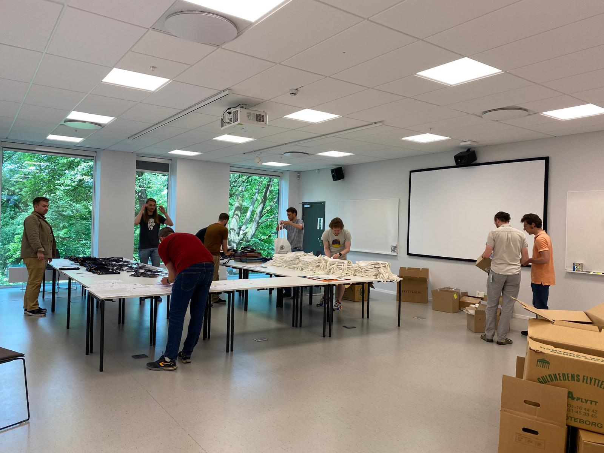

Master in Logic
Come learn Logic with us!
Our research group powers the Master’s programme in Logic offered at the University of Gothenburg. For full details and application procedure, see the official webpage of the Master’s Programme in Logic. Do check out our poster!
The purpose of the Master’s Programme in Logic is to provide a new generation of students with thorough theoretical knowledge, and the ability to apply it, within a central intellectual field, which gets its theoretical interest and practical value from a unique combination of humanities, mathematics and information science. For the Faculty of Humanities this is a commitment to promote and further develop the field of mathematical humanities.
The main goal is that students, after successful completion of the programme, will have a coherent training and thorough understanding of the theoretical fundamentals of the subject of logic itself, its general role in the sciences and humanities, as well as its applications in fields like philosophy, linguistics, mathematics and computer science. Students will be well prepared for a career of research and development in logic and its applications, both in academia and industry.

The programme starts with a number of core courses, common for all students, which provide a solid foundation in the fundamentals of theoretical logic and its applications, and then follow elective courses, tailored to the background, interests and career plans for individual students.
Programme structure and content
The programme begins with an in-depth introductory course specifically designed to give students from diverse backgrounds the foundational knowledge needed. There are six mandatory courses providing core knowledge:
- Logical Theory
- Set Theory
- Modal Logic
- Philosophy of Logic
- Proof Theory
- Model theory
Next to the mandatory courses, the program offers a broad and dynamic collection of elective courses. Below you find a list of elective courses that were offered in the recent past at our master, roughly sorted by topic. Note that we can’t guarantee that these courses will be offered during your stay.
Proof Theory
- Lambda calculus and type theory
- Quantified modal logic, Dependence logic
- Provability logic
Categorical Logic
- Category theory
- Functorial Semantics
- Introduction to Topos Theory
Logic and Computation
- Models of computation
- Logic, Games and automata
- Decision theory
Logic in Philosophy
- Philosophy of mathematics
- History of logic
- Human reasoning and cognitive science
- Axiomatic theories of truth
You’re also encouraged to choose elective courses taught at partner departments. You will receive guidance to help build a profile matching your individual plans for your future career. Seminars, peer review, and supervising will assist you in writing your thesis, which is an in-depth exploration of a topic of your choice.